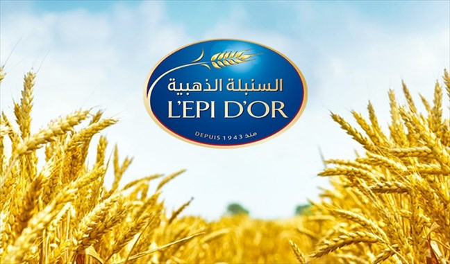
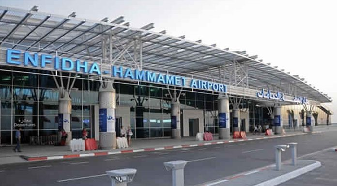
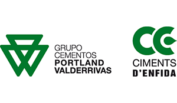

Stage chez L'Epi d'Or
Période : Février 2024 - Mai 2023
Entreprise : L'Epi d'Or
Missions principales :
- Analyse des besoins : Comprendre le problème et étudier le cahier des charges.
- Programmation : Développement de logiciels, de programmes pour automates (PLCs) ou d’outils industriels.
- Tests et validation : Vérifier et corriger le fonctionnement des systèmes ou logiciels développés.
- Optimisation : Améliorer les processus ou systèmes existants pour plus d’efficacité.
- Documentation : Rédiger des rapports et des guides techniques pour expliquer les solutions.
- Suivi de projet : Respecter les délais et coordonner avec les équipes.
Compétences acquises :
- Techniques : Programmation industrielle (PLCs, SCADA, IHM), tests, maintenance, optimisation et modélisation de systèmes.
- Transversales : Gestion de projet, résolution de problèmes, communication et travail en équipe.
- Industrielles : Compréhension des processus, respect des normes de qualité/sécurité et utilisation d’outils spécifiques.

Stage chez l'Aéroport International Enfidha-Hammamet
Période : Juillet 2023 - Aout 2023
Missions principales :
- Analyse des besoins : Identifier les besoins des départements de l'aéroport et comprendre les systèmes utilisés.
- Développement : Participer à la création ou à la mise à jour des logiciels et systèmes pour la gestion des passagers, de la sécurité et des équipements.
- Tests et validation : Tester les systèmes en place pour assurer leur bon fonctionnement.
- Optimisation : Proposer des solutions pour améliorer les processus opérationnels (gestion des vols, embarquement, etc.).
- Documentation : Rédiger des rapports techniques et des guides pour le personnel.
- Suivi de projet : Travailler avec les équipes pour s'assurer que les délais sont respectés et que les projets avancent correctement.
Compétences acquises :
- Techniques : Développement de logiciels, tests et maintenance des systèmes.
- Organisation : Gestion de projets, respect des délais.
- Communication : Rédaction de rapports et échanges avec les équipes.
- Secteur aéroportuaire : Compréhension des processus aéroportuaires et des règles de sécurité.

Stage chez Cimenterie Enfidha
Période : Juin 2022 - Juillet 2022
Missions principales :
- Analyse des besoins : Étudier les besoins en automatisation et en optimisation des systèmes de production.
- Développement et maintenance : Participer à la mise à jour des systèmes de contrôle et d'automatisation des lignes de production.
- Tests et validation : Tester les équipements et les systèmes pour s'assurer de leur bon fonctionnement et de leur sécurité.
- Optimisation des processus : Proposer des solutions pour améliorer la productivité et réduire les coûts de production.
- Documentation : Rédiger des rapports techniques sur les interventions réalisées et la performance des systèmes.
- Suivi de projet : Collaborer avec les équipes de production et de maintenance pour garantir l’efficacité des systèmes et respecter les délais.
Compétences acquises :
- Techniques : Automatisation des processus industriels, maintenance des systèmes de production.
- Organisation : Gestion de projet et suivi des actions de maintenance.
- Communication : Rédaction de documents techniques et échange avec les équipes de production.
